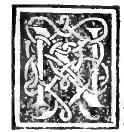
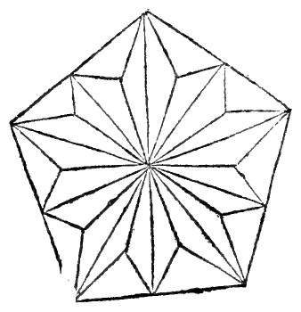

CAPITOLO LV¶
Del modo asaperne oltra li dicti più formare e commo lor forme in infinito procedano.

Non me pare excelso Duca in dicti corpi più extendermi conciosia chel lor processo tenda in infinito per la continua e successiua abscisione de mano in mano de li suoi anguli solidi e secondo quella lor varie forme se vengano multiplicare. E queste dase siandoli lauia per li già dicti aperta porrà sequili perche sempre fia dicto quod facile est inventis addere. Non e difficile larogere ale cose trouate epero più o manco leuando egiognendo alepredette sira facile a ogni proposito. E questo solo habiamo finor sequito per monstrare commo da quelli 5 regulari lauirtu sempre neglialtri dependenti se distilla asimilitudine deli 5 semplici che ala formatione de ogni creato composto concorrano.
Per la qual cosa (commo de sopra fo acenato) Platone fo constretto le prelibate 5 formi regulari ali 5 corpi semplici atribuire cioè ala terra aiere aqua fuoco e cielo commo difusamente apare nel suo Thimeo doue dela natura deluniuersa tratto. E alo elemento dela terra atribui la forma cubica cioè quella de lo exacedron conciosia che al moto ninna figura habia bisogno de magior violenza. E infra tutti li elementi che si troua più fixa constante e ferma che latterra.
Equella del tetracedron la dette alo elemento del fuoco pero che volando in su causa la forma pyramidale chel simile el nostro fuoco alochio cilfa aperto peroche noi vediamo quello al piano e in basso largo e uniforme sempre in • su degradare in modo che sua fiama la cima in vn ponto termina si commo su el cono de ogni pyramidc la forma deloctocedron la tribui alaere. Peroche si commo Uiierc a vn piccol mouimento se quiu. el fuoco cosi la forma pyramidale i) sequita per la habilita al moto la forma de la Pyramide. Eia figura del 20 basi cioè delo ycocedron ladeputo alaqua.
Perochó conciosia che lasia circundata de più basi che alcuna de laltre: li parse che la conuenisse in la spera più presto al moto dela cosa che spargendo scende: che de quella che ascende. Eia forma del 1 2 basi pentagone atribui al cielo si commo a quello che e receptaculo de tutte le cose, questo duodecedron el simile fia receptaculo e albergo de tutti glialtri 4 corpi regulari commo apare in le loro inscriptioni vno in laltro. E ancora commo dici Alcinouo sopra el Timeo de Platone, perche si commo nel cielo sonno 12 segni nel suo zodiaco e ognuno de quelli in 30 equali parti se diuide che tutta la sua annuale reuolutione fia 360.
Cosi questo duodecedron ha in se 12 basi pentagone de lequali ognuna in 5 trianguli resoluta fermando el ponte in mezzo e ognuno de dicti triangoli in 6 scaleni: che in tutte basi son 3o triangulari per vna: che fra tutte sonno 360 commo dicto zodiaco. E queste tali forme da Calcidio celeberrimo philosopho exponendo el dicto Timeo molto sonno commendate. E cosi da Macrobio.
Apuleio e moltissimi altri: perche in vero sonno de ogni commend,atione degni, per le ragioni che in loro fabriche se aducano mostrando la sufficientia de diete 5 forme si commo el numero de dicti simplici non si pò in natura accrescere, cosi queste 5 regulari non e possibile asegnarne più che de basi e de lati e de anguli sienno equali: e che in spera collocati toccando vnangolo tutti tocchino. Perche se in natura se potesse vn sexto corpo semplice asegnare el sumrao opefice verebbe a esser stato in le sue cose diminuto e senza prudenza da giudicarlo, non hauendo a principio tutto el bisogno oportuno a lei cognosciuto.
E per questo certamente e non per altro mosso comprendo Platone queste tali commo e dicto a ciascuno deli dicti semplici altribuisse cosi argumentando: cioè commo buonissimo geometra e profondissimo mathematjco. vedendo le 5 varie forme de questi non poter per alcun modo alcunaltra che al sperico tenda de lati basi e angoli commo e dicto equali ymaginarse ne formare commo in la penultima del 13. se mostra e per noi aloportuno saduci non immeritamente argui le ditte aduenire ali 5 semplici. Eda quelli ognaltra forma dependere.
E auenga che questi 5 sienno soli chiamati regulari non pero se exclude la spera che non sia sopra tutti regularissima: e ognaltro da quella deriuarse commo dala causa dele cause più sublime: e in lei non e varietà alcuna ma vniformita per tutto e in ogni luogo ha suo principio e fine e dextro e sinistro. La cui forma onde se causi qui sequente ponendo fine a dicti dependenti lo diremo: e successiuamente de tutti glialtri corpi oblonghi: cioè che più longhi che larghi sonno.
Marginal Woodcut Diagrams (Paganini 1509)¶

Folio 0049 Diagram 1¶